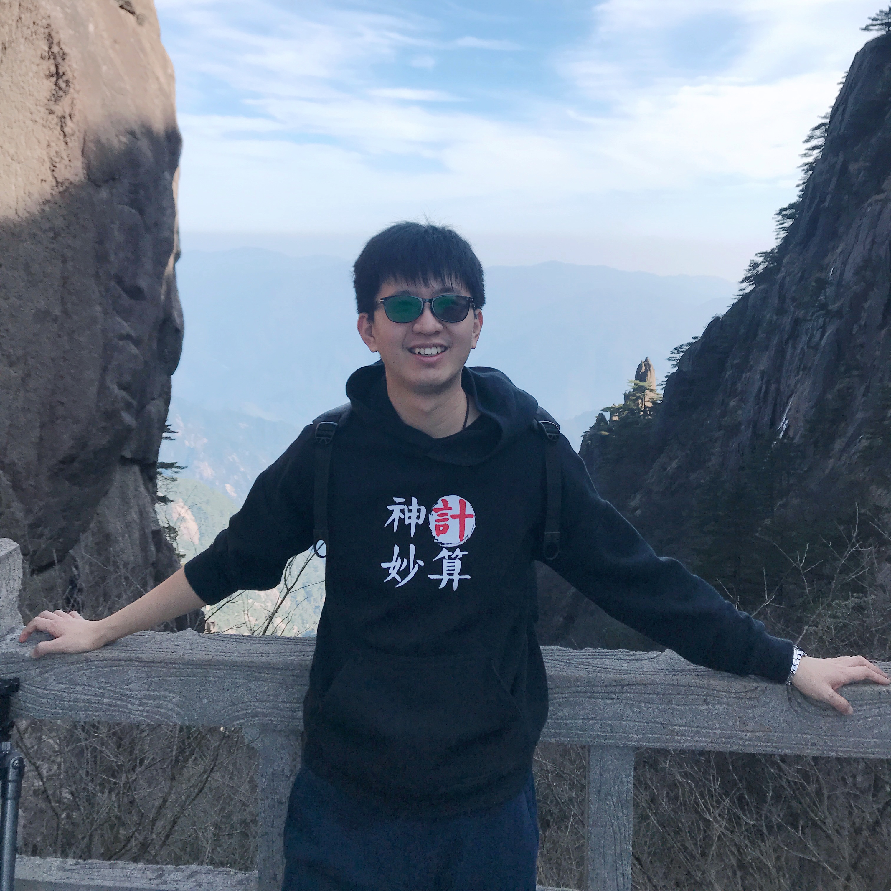

|  | Kun Li （李琨） |


Brief Biography
News
- [Nov. 2024] Our paper "FlashFFTStencil: Bridging Fast Fourier Transforms to Memory-Efficient Stencil Computations on Tensor Core Units" is accepted by PPoPP'25. Congratulations to Haozhi!
- [Nov. 2024] Our paper "Jigsaw: Toward Conflict-free Vectorized Stencil Computation by Tessellating Swizzled Registers" is accepted by PPoPP'25. Congratulations to Yiwei!
- [Oct. 2024] Awarded with 2024 ACM SIGHPC 中国新星奖! [More]
- [Sep. 2024] Awarded with 2024 CCF高性能计算青年科技人才奖! [More]
- [Aug. 2024] Our paper "LONG EXPOSURE: Accelerating Parameter-Efficient Fine-Tuning for LLMs under Shadowy Sparsity" is accepted by SC'24. Congratulations to Tuowei!
- [Aug. 2024] Our paper "LoRAStencil: Low-Rank Adaptation of Stencil Computation on Tensor Cores" is accepted by SC'24. Congratulations to Yiwei!
- [Mar. 2024] Our paper "ConvStencil: Transform Stencil Computation to Matrix Multiplication on Tensor Cores" wins PPOPP'24 Best Paper Award!
Selected Publications
- [To be appeared] Tuowei Wang, Kun Li *, Donglin Bai, Fusong Ju, Leo Xia, Ju Ren, Yaoxue Zhang, Ting Cao, Mao Yang. Matryoshka: Optimization of Dynamic Diverse Quantum Chemistry Systems via Elastic Parallelism Transformation. [Paper]
- [PPOPP'25] Haozhi Han, Kun Li *, Wei Cui, Donglin Bai, Yiwei Zhang, Liang Yuan, Yifeng Chen, Yunquan Zhang, Ting Cao, Mao Yang. FlashFFTStencil: Bridging Fast Fourier Transforms to Memory-Efficient Stencil Computations on Tensor Core Units. [Paper]
- [PPOPP'25] Yiwei Zhang, Kun Li *, Liang Yuan, Haozhi Han, Yunquan Zhang, Ting Cao, Mao Yang. Jigsaw: Toward Conflict-free Vectorized Stencil Computation by Tessellating Swizzled Registers. [Paper]
- [SC'24] Yiwei Zhang, Kun Li *, Liang Yuan, Jiawen Cheng, Yunquan Zhang, Ting Cao, Mao Yang. LoRAStencil: Low-Rank Adaptation of Stencil Computation on Tensor Cores. [Paper]
- [SC'24] Tuowei Wang, Kun Li *, Zixu Hao, Donglin Bai, Ju Ren, Yaoxue Zhang, Ting Cao, Mao Yang. LONG EXPOSURE: Accelerating Parameter-Efficient Fine-Tuning for LLMs under Shadowy Sparsity. [Paper]
- [IPDPS'24] Luhan Wang, Haipeng Jia, Lei xu, Cunyang Wei, Kun Li , Xianmeng Jiang, Yunquan Zhang. VNEC: A Vectorized Non-Empty Column Format for SpMV on CPUs.
- [PPOPP'24, [Best Paper Award] ] Yuetao Chen, Kun Li *, Yuhao Wang, Donglin Bai, Lei Wang, Lingxiao Ma, Liang Yuan, Yunquan Zhang, Ting Cao, Mao Yang. ConvStencil: Transform Stencil Computation to Matrix Multiplication on Tensor Cores. [Paper]
- [ICS'23] Tun Chen, Haipeng Jia, Yunquan Zhang, Kun Li, Zhihao Li, Xiang Zhao, Jianyu Yao. OpenFFT: An Adaptive Tuning Framework for 3D FFT on ARM Multicore CPUs.
- [TPDS'23] Hang Cao, Liang Yuan, He Zhang, Yunquan Zhang, Baodong Wu, Kun Li, Shigang Li, Minghua Zhang, Pengqi Lu, and Junmin Xiao. AGCM-3DLF: Accelerating Atmospheric General Circulation Model via 3D Parallelization and Leap-Format.
- [HPCC'22] Luhan Wang, Haipeng Jia, Yunquan Zhang, Kun Li, and Cunyang Wei. EgpuIP: An Embedded GPU Accelerated Library for Image Processing.
- [HPCC'22] Cunyang Wei, Haipeng Jia, Yunquan Zhang, Kun Li, and Luhan Wang. LBBGEMM: A Load-Balanced Batch GEMM Framework on ARM CPUs.
- [IPDPS'22] Kun Li, Liang Yuan, Yunquan Zhang, Yue Yue, and Hang Cao. An Efficient Vectorization Scheme for Stencil Computation. [Paper]
- [TPDS'22] Kun Li, Liang Yuan, Yunquan Zhang, and Gongwei Chen. An Accurate and Efficient Large-scale Regression Method through Best Friend Clustering. [Paper]
- [SC'21] Kun Li, Liang Yuan, Yunquan Zhang, and Yue Yue. Reducing Redundancy in Data Organization and Arithmetic Calculation for Stencil Computations. [Paper]
- [SC'21] Liang Yuan, Hang Cao, Yunquan Zhang, Kun Li, Pengqi Lu, and Yue Yue. Temporal Vectorization for Stencils. [Paper]
- [SC'19] Kun Li, Honghui Shang, Yunquan Zhang, Shigang Li, Baodong Wu, Dong Wang, Libo Zhang, Fang Li, Dexun Chen, and Zhiqiang Wei. OpenKMC : a KMC design for hundred-billion-atom simulation using millions of cores on Sunway Taihulight. (Acceptance rate: 22.7%, 78/344) [Paper]
- [ISPA'19] Kun Li, Shigang Li, Bei Wang, Yifeng Chen, and Yunquan Zhang. swMD: Performance Optimizations for Molecular Dynamics Simulation on Sunway Taihulight. [Paper]
- [JSUPERCOMPUT'19] Kun Li, Shigang Li, Shan Huang, Yifeng Chen, and Yunquan Zhang. FastNBL: fast neighbor lists establishment for molecular dynamics simulation based on bitwise operations. The Journal of Supercomputing (2019): 1-20. [Paper]
- [ICPP'18] Junmin Xiao, Shigang Li, Baodong Wu, He Zhang, Kun Li, Erlin Yao, Yunquan Zhang, and Guangming Tan. Communication-Avoiding for Dynamical Core of Atmospheric General Circulation Model. [Paper]
- [JCST'17] Kun Li, Haipeng Jia, Ting Cao, and Yunquan Zhang. The Implementation and Optimization of Multidimensional FFT Algorithm on Large-scale Clusters. The Journal of Frontiers of Computer Science and Technology, 2017. [Paper]
- [HPCChina'16] Kun Li, Yan Li, Ting Cao, Haipeng Jia, and Yunquan Zhang. An MPI-based 3D FFT Implementation on CPUGPU Heterogeneous Clusters. National Annual Conference on High Performance Computing 2016.
- CCF High-Performance Computing Young Talent Award , 中国计算机学会高性能计算青年科技人才奖
- ACM SIGHPC China Rising Star Award , 美国计算机协会SIGHPC中国新星奖
- Microsoft Research Asia Science Craftsman
- CCF Outstanding Doctoral Dissertation Award , 中国计算机学会优秀博士学位论文奖
- ACM SIGHPC China Outstanding Doctoral Dissertation Award , 美国计算机协会SIGHPC中国优秀博士学位论文奖
- Microsoft Star of Tomorrow
- Executive Committee Member, CCF High-Performance Computing Committee , 中国计算机学会高性能计算委员会执行委员
- 中国计算机学会(CCF)体系结构委员会委员
- Dec.23, 2024. Featured by Microsoft Research, Toward Zettascale Computing: Accelerating Scientific Discovery with the Cloud4Science”.
- Feb.24, 2023. Featured by Microsoft Research, 科学匠人 | 李琨：执著于高性能计算研究的“别人家的孩子”.
- Jan.10, 2023. Featured by ICT, CAS, 学术科研 | 计算所两篇论文入选2022年“CCF优秀博士学位论文激励计划”.
- Jul.20, 2022. Featured by ICT, CAS, 毕业生故事 | 与你相见，千万次不曾放弃.
- Dec.23, 2024. Invited by Honghui Shang@University of Science and Technology of China. Evolution of HPC Paradigm through Unified Matrix Computation: Computing the Future in the AI Era
- Dec.22, 2024. Invited by Hong An@University of Science and Technology of China. Evolution of HPC Paradigm through Unified Matrix Computation: Computing the Future in the AI Era
- Sep.25, 2024. Keynote @ HPCChina 2024. Evolving the HPC Paradigm with Unified Matrix Computation on AI Accelerators
- Sep.20, 2024. Invited by Yan Li@Lenovo Research. A New High-Performance Computing Paradigm on Tensor Core Units
- Aug.30, 2024. Invited by Jue Wang @ CNIC, CAS. Evolving the HPC Paradigm with Unified Matrix Computation on AI Accelerators
- Aug.29, 2024. Invited by En Shao @ ICT,CAS. Evolving the HPC Paradigm with Unified Matrix Computation on AI Accelerators
- Nov.19, 2023. Invited by Chen Ding @ University of Rochester. ConvStencil
- Nov.19, 2023. Invited by GuoMeng Studio@University of Chinese Academy of Sciences. Star Roundtable
- Oct.28, 2023. Invited by PKU Linux Club@Peking University. AI4Science Salon
- Oct.11, 2023. Invited by CCF. CCF SPP Live
- May.18, 2023. Invited by Jianfei Chen@Tsinghua University. CCF YEF 2023
- Apr.26, 2023. Invited by Liang Yuan@ICT,CAS. The Young Scholars Forum
- Mar.23, 2023. Invited by Haisen Zhao@Shandong University. The Young Scholars Forum
- Dec.15, 2022. Invited by Jidong Zhai@Tsinghua University. HPC China 2022
- Jun.21, 2019. Invited by Xinfu He@China Institute of Atomic Energy. Nuclear Reactors Prototype System Workshop
- Dec.24, 2017. Invited by Mingmin Chi@Fudan University. Square Kilometre Array Annual Conference. [Poster]
*: Corresponding author.
{kind=link}
{kind=link}